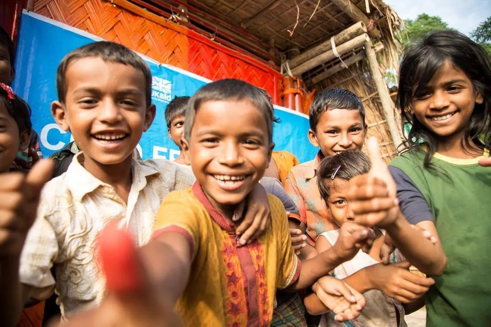
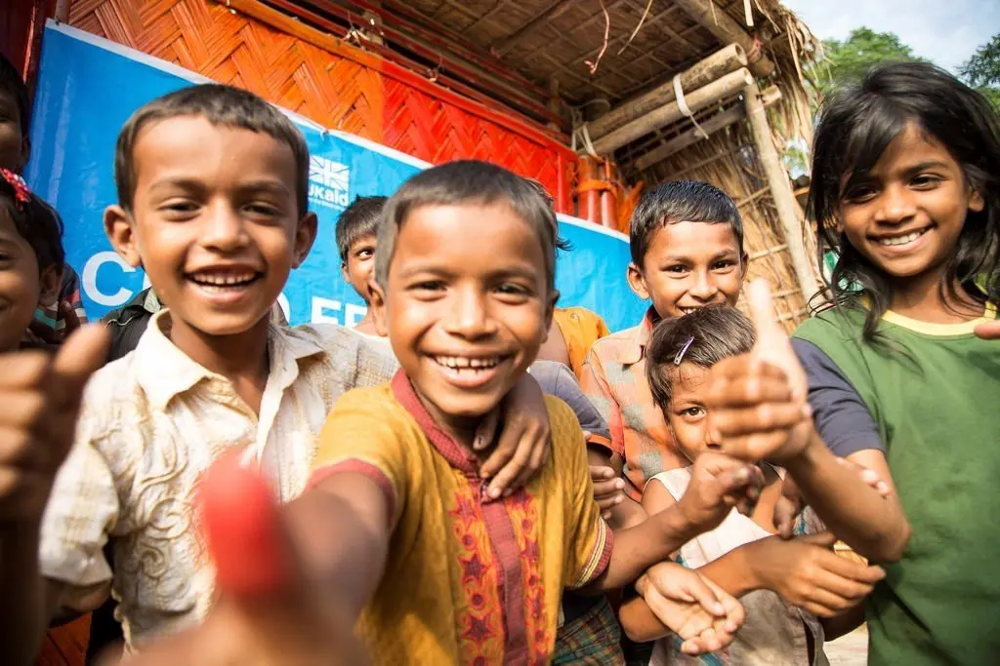
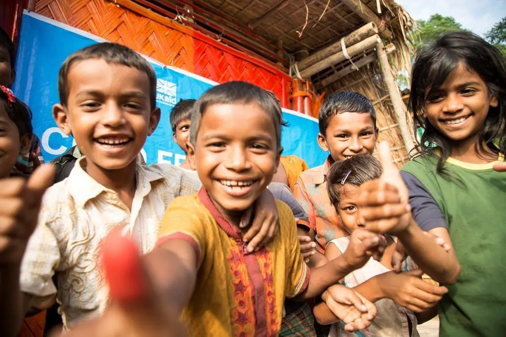

Bem-vindo ao Mão Amiga
Nosso objetivo é conectar pessoas que precisam de ajuda com aquelas dispostas a ajudar. Junte-se a nós para fazer a diferença na vida de alguém hoje!
 

Nosso objetivo é conectar pessoas que precisam de ajuda com aquelas dispostas a ajudar. Junte-se a nós para fazer a diferença na vida de alguém hoje!

Somos uma organização dedicada a promover a solidariedade e o apoio mútuo. Acreditamos que pequenas ações podem transformar vidas, levando esperança e oportunidades a comunidades em situação de vulnerabilidade. Trabalhamos para conectar pessoas dispostas a ajudar com aquelas que mais precisam, construindo pontes de empatia e colaboração.
A Mão Amiga tem como missão transformar vidas por meio da solidariedade, conectando pessoas dispostas a ajudar com aquelas que mais precisam. Trabalhamos para reduzir desigualdades sociais, promover a cidadania e incentivar a empatia, levando esperança e oportunidades a comunidades em situação de vulnerabilidade.
Nossa missão é facilitar a conexão entre pessoas que precisam de ajuda e aquelas que desejam contribuir, criando uma rede de apoio que fortaleça nossa comunidade.
Ser reconhecida como uma organização líder em solidariedade, inspirando ações positivas. Ser uma referência nacional em voluntariado e impacto social, reconhecida pela transparência, credibilidade e capacidade de unir pessoas em torno de um propósito comum: construir um futuro mais justo e humano para todos.
Almejamos ser uma organização que inspira confiança e engajamento, promovendo uma cultura de solidariedade ativa e cidadania participativa em todas as regiões do país.
Queremos fortalecer redes de apoio, conectar comunidades e impulsionar ações que transformem realidades, tornando o voluntariado uma força motriz para o desenvolvimento social sustentável e inclusivo.
1 - Solidariedade: acreditamos que pequenas atitudes podem gerar grandes mudanças.
2 - Respeito: valorizamos a dignidade e os direitos de cada indivíduo.
3 - Transparência: agimos com ética e clareza em todas as nossas ações e parcerias.
4 - Comprometimento: dedicamos nossos esforços para gerar resultados reais e duradouros.
5 - Esperança: trabalhamos para inspirar um ciclo contínuo de empatia e transformação social.
Desde nossa fundação, temos impactado positivamente a vida de milhares de pessoas através de campanhas de arrecadação, programas educacionais e iniciativas comunitárias. Nossas conquistas refletem o compromisso e a dedicação de todos que fazem parte do Mão Amiga.